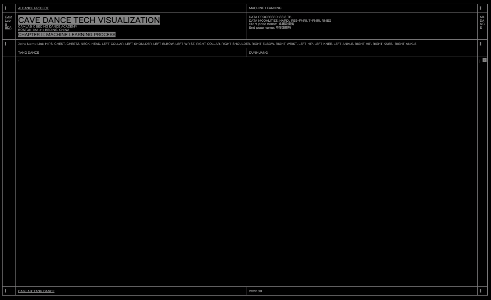

<!DOCTYPE html>
<html lang="en">
	<head>
<title>Dunhuang Cave Dance </title>
		<meta charset="utf-8">
		<meta name="viewport" content="width=device-width, user-scalable=no, minimum-scale=1.0, maximum-scale=1.0">
		<link type="text/css" rel="stylesheet" href="data.css">
		<link href="https://assets-global.website-files.com/603fe89ec4bbcece7ee6a53a/61014076aa014a767ce9208c_favicon.png" rel="shortcut icon" type="image/x-icon" />
		<link href="https://assets-global.website-files.com/603fe89ec4bbcece7ee6a53a/610140795b9a3f0382a58e51_web-clip.png" rel="apple-touch-icon" />
		<style>
		body {
			/* background-image: url('textures/dunhuang/amo_data_bg_dimmed_black.png'); */
			margin:0;
			padding:0;
			overflow: hidden;
		}
		.threeDcontainer {
			z-index: 999;
			position: absolute;
    	/* top: 131px; */
		}
		</style>
	</head>

	<body>
		<!-- <div id="info">
		<a href="https://threejs.org" target="_blank" rel="noopener">three.js</a> - OBJLoader test
		</div> -->

		<!-- Import maps polyfill -->
		<!-- Remove this when import maps will be widely supported -->
		<script async src="https://unpkg.com/es-module-shims@1.3.6/dist/es-module-shims.js"></script>

		<script type="importmap">
			{
				"imports": {
					"three": "../build/three.module.js"
				}
			}
		</script>


		<script type="module">

			import * as THREE from 'three';

			import { BVHLoader } from './jsm/loaders/BVHLoader.js';

			import { OBJLoader } from './jsm/loaders/OBJLoader.js';
			import { EffectComposer } from './jsm/postprocessing/EffectComposer.js';
						import { RenderPass } from './jsm/postprocessing/RenderPass.js';
						import { UnrealBloomPass } from './jsm/postprocessing/UnrealBloomPass.js';

			let container;
			let camera, scene, renderer, clock;

			let mouseX = 0, mouseY = 0;

			let windowHalfX = window.innerWidth / 2;
			let windowHalfY = window.innerHeight / 2;

			let object;

			let skeletonHelper,boneContainer;
			let skeletonHelper2,boneContainer2;
			let mocap_x = 0, mocap_y = 0, mocap_z = 0;

			let composer, mixer, mixer2;

			const params = {
				exposure: 1,
				bloomStrength: 1.5,
				bloomThreshold: 0,
				bloomRadius: 0
			};

			init();
			animate();


			function init() {

				container = document.createElement( 'div' );
				container.className = "threeDcontainer"
				document.body.appendChild( container );

				clock = new THREE.Clock();

				camera = new THREE.PerspectiveCamera( 45, window.innerWidth / window.innerHeight, 1, 2000 );
				//camera.position.z = 250;
					camera.position.y = 10;
				camera.position.z = 10;


				scene = new THREE.Scene();
				// Background
				let bgImg = 'textures/dunhuang/amo_data_bg_dimmed_black.png';
				bgImg = 'textures/dunhuang/amo_data_bg_texture.png';
					//bgImg = 'textures/dunhuang/0.png';
		const spaceTexture = new THREE.TextureLoader().load(bgImg);
		scene.background = spaceTexture;


				const ambientLight = new THREE.AmbientLight( 0xcccccc, 0.4 );
				scene.add( ambientLight );

				const pointLight = new THREE.PointLight( 0xffffff, 0.8 );
				camera.add( pointLight );
				scene.add( camera );

				// manager

				function loadModel() {

					object.traverse( function ( child ) {

						if ( child.isMesh ) child.material.map = texture;

					} );

				//	object.position.y = - 95;
					scene.add( object );

				}

				const manager = new THREE.LoadingManager( loadModel );

				// texture

				const textureLoader = new THREE.TextureLoader( manager );
				const texture = textureLoader.load( 'textures/uv_grid_opengl.jpg' );

				// model

				function onProgress( xhr ) {

					if ( xhr.lengthComputable ) {

						const percentComplete = xhr.loaded / xhr.total * 100;
						console.log( 'model ' + Math.round( percentComplete, 2 ) + '% downloaded' );

					}

				}

				function onError() {}


				// 3D Object - BVH Mo-Cap Skeleton
		    const bvh = new BVHLoader();
		    bvh.load( "models/bvh/ml0.bvh", function ( result ) { // 雷公鼓（男）_Obj01 // original "models/bvh/0-6000.bvh"
		       skeletonHelper = new THREE.SkeletonHelper( result.skeleton.bones[ 0 ] );
		      skeletonHelper.skeleton = result.skeleton; // allow animation mixer to bind to THREE.SkeletonHelper directly

		       boneContainer = new THREE.Group();
		      boneContainer.add( result.skeleton.bones[ 0 ] );

		      scene.add( skeletonHelper );
		      scene.add( boneContainer );

		      const scale = 0.08;
		      boneContainer.scale.set(scale, scale, scale);
		      skeletonHelper.scale.set(scale, scale, scale);
					skeletonHelper.material = new THREE.MeshBasicMaterial({
						 color:"white",
						 transparent:"true",
						 opacity:"1.0",
						 wireframe: "true",
						 wireframeLinewidth: "10.0"
					});

					let x = mocap_x;
					let y = mocap_y;
					let z = mocap_z;
		      boneContainer.translateX(x);
		      boneContainer.translateY(y);
		      boneContainer.translateZ(z);
		      skeletonHelper.translateX(x);
		      skeletonHelper.translateY(y);
		      skeletonHelper.translateZ(z);

		      // play animation
		      mixer = new THREE.AnimationMixer( skeletonHelper );
		      mixer.clipAction( result.clip ).setEffectiveWeight( 1.0 ).play();

		    } );

				// 3D Object - BVH Mo-Cap Skeleton
		    const bvh2 = new BVHLoader();
		    bvh.load( "models/bvh/ml1.bvh", function ( result ) { //反弹琵琶（男）0-6000帧
		       skeletonHelper2 = new THREE.SkeletonHelper( result.skeleton.bones[ 0 ] );
		      skeletonHelper2.skeleton = result.skeleton; // allow animation mixer to bind to THREE.SkeletonHelper directly

		       boneContainer = new THREE.Group();
		      boneContainer2.add( result.skeleton.bones[ 0 ] );

		      scene.add( skeletonHelper2 );
		      scene.add( boneContainer2 );

		      const scale = 0.08;
		      boneContainer2.scale.set(scale, scale, scale);
		      skeletonHelper2.scale.set(scale, scale, scale);
					skeletonHelper2.material = new THREE.MeshBasicMaterial({
						 color:"white",
						 transparent:"true",
						 opacity:"1.0",
						 wireframe: "true",
						 wireframeLinewidth: "10.0"
					});

					let x = mocap_x;
					let y = mocap_y;
					let z = mocap_z;
		      boneContainer2.translateX(x);
		      boneContainer2.translateY(y);
		      boneContainer2.translateZ(z);
		      skeletonHelper2.translateX(x);
		      skeletonHelper2.translateY(y);
		      skeletonHelper2.translateZ(z);

		      // play animation
		      mixer2 = new THREE.AnimationMixer( skeletonHelper2 );
		      mixer2.clipAction( result.clip ).setEffectiveWeight( 1.0 ).play();

		    } );


				const loader = new OBJLoader( manager );
				let path = 'models/obj/male02/male02.obj';

				path = 'models/dunhuang/_curve.obj'; // the placeholder for the curve for ml motion～ previously made for bird

				loader.load(path , function ( obj ) {

					object = obj;

				}, onProgress, onError );


				renderer = new THREE.WebGLRenderer();
				renderer.setPixelRatio( window.devicePixelRatio );
				renderer.setSize( window.innerWidth, window.innerHeight );
				container.appendChild( renderer.domElement );


				const renderScene = new RenderPass( scene, camera );

				const bloomPass = new UnrealBloomPass( new THREE.Vector2( window.innerWidth, window.innerHeight ), 1.5, 0.4, 0.85 );
				bloomPass.threshold = params.bloomThreshold;
				bloomPass.strength = params.bloomStrength;
				bloomPass.radius = params.bloomRadius;

				composer = new EffectComposer( renderer );
				composer.addPass( renderScene );
				composer.addPass( bloomPass );


				document.addEventListener( 'mousemove', onDocumentMouseMove );


				window.addEventListener( 'resize', onWindowResize );

			}

			function onWindowResize() {

				windowHalfX = window.innerWidth / 2;
				windowHalfY = window.innerHeight / 2;

				camera.aspect = window.innerWidth / window.innerHeight;
				camera.updateProjectionMatrix();

				renderer.setSize( window.innerWidth, window.innerHeight );

			}

			function onDocumentMouseMove( event ) {

				mouseX = ( event.clientX - windowHalfX ) / 2;
				mouseY = ( event.clientY - windowHalfY ) / 2;

			}

			//

			function animate() {

				requestAnimationFrame( animate );
				render();

				const time = - performance.now() * 0.0003;

	      // 	animate the skeleton
	      const delta = clock.getDelta();
	      if ( mixer ) mixer.update( delta );
				if ( mixer2 ) mixer2.update( delta );


			}

			function render() {

				camera.position.x += ( mouseX - camera.position.x ) * .05;
				camera.position.y += ( - mouseY - camera.position.y ) * .05;

				camera.lookAt( scene.position );

				renderer.render( scene, camera );
				composer.render();

			}

		</script>


		<!-- <div class="content stat-overlay">
			<div class="body">
				<h2 class="title">Celestial dance in dunhuang cave</h2>
					<div class="description">Machine Learning Process </div>
					
			</div>


		</div> -->
	</div>


	</body>
</html>
